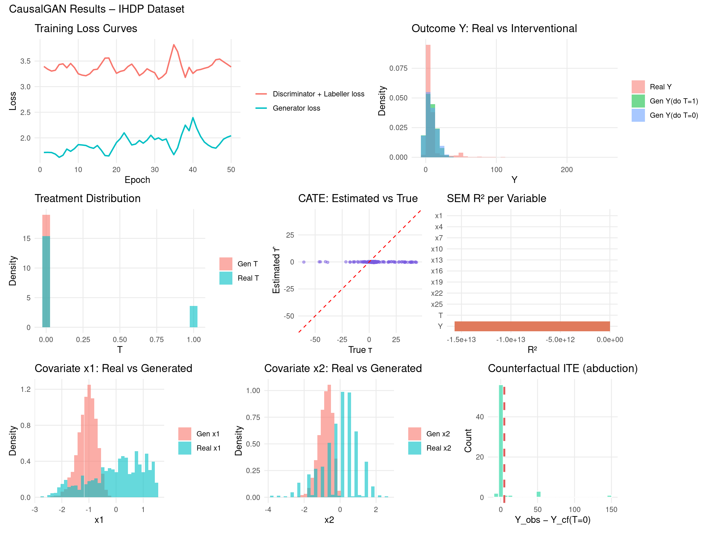

Code
packages <- c(
"tidyverse",
"plyr",
"RCausalML",
"causaldata",
"torch",
"dagitty",
"ggdag",
"igraph"
)
Causal Generative Network (CausalGAN) is a causal-aware extension of the classic GAN framework, introduced by Kocaoglu et al. (2018) in the paper CausalGAN: Learning Causal Implicit Generative Models with Adversarial Training. It lets you train a generative model that respects a user-specified causal DAG while still producing high-quality, realistic samples from the joint distribution. The key advantage is that the model can answer causal queries—interventions (\(\mathrm{do}(\cdot)\)) and counterfactuals—without any retraining or additional data, something a vanilla GAN cannot do.
A normal GAN (Goodfellow et al., 2014) learns an implicit generator \(G\) that maps noise \(Z \sim p_Z\) to samples \(\hat{\mathbf{v}} = G(Z)\) so that the joint distribution \(p(\hat{X}, \hat{T}, \hat{Y})\) matches the data distribution \(p(X, T, Y)\). However, because the generator is a black-box neural network, it has no notion of causal mechanisms. You cannot ask it: - Interventional query: “What would \(Y\) be if we forced \(T = 1\) for everyone?” (\(\mathbb{E}[Y \mid \mathrm{do}(T=1)]\)). - Counterfactual query: “Given that this patient had \(T=0\) and outcome \(Y=0\), what would their \(Y\) have been if they had received treatment \(T=1\)?”
CausalGAN fixes this by turning the generator into a Structural Causal Model (SCM) whose functional form is exactly the causal graph you provide.
Architecturally, CausalGAN decomposes the generator into separate modules that mirror the structure of the causal DAG. For a simple DAG with \(X \to T \to Y\) and \(X \to Y\), the generator is structured as follows:

Instead of one monolithic generator, CausalGAN decomposes the generator according to the topological order of the DAG. Every node \(V_i\) gets its own sub-generator \(G_i\):
\[ \begin{align*} \hat{X} &= G_X(Z_X) \\ \hat{T} &= G_T(\hat{X}, Z_T) \\ \hat{Y} &= G_Y(\hat{X}, \hat{T}, Z_Y) \end{align*} \]
Because the architecture hard-wires the graph, the generator automatically satisfies the Markov factorization of the joint distribution induced by the DAG.
To perform an intervention \(\mathrm{do}(T = t)\):
\[ \hat{Y}_{\mathrm{do}(T=1)} = G_Y(\hat{X}, \hat{T}=1, Z_Y) \]
No weights are changed. This is exactly Pearl’s \(\mathrm{do}\)-operator realized inside the generator. You can now compute interventional quantities by sampling many such trajectories and averaging (e.g., average treatment effect, conditional interventions, etc.).
Standard GANs only have one global discriminator \(D\) that tries to distinguish real \((X,T,Y)\) from fake \((\hat{X},\hat{T},\hat{Y})\). CausalGAN adds one small “labeller” (local discriminator/classifier) per node.
The total adversarial loss becomes:
\[ \mathcal{L} = \mathcal{L}_{\text{joint}} + \sum_i \lambda_i \mathcal{L}_{\text{label},i} \]
This extra supervision forces each structural equation \(G_i\) to match the correct conditional \(p(V_i \mid \text{Pa}(V_i))\) implied by the data. Without labellers, a plain GAN could learn a joint that is statistically close but violates the causal conditionals.
Counterfactuals require three steps (abduction → action → prediction), exactly as in Pearl’s SCM framework:
\[ \mathbf{u}^* = \arg\min_{\mathbf{u}} \;\; \bigl\| G(\mathbf{u}) - (x,t,y) \bigr\|_2^2 + \text{regularizers} \] This is solved by gradient descent on the noise vectors (a few dozen steps at inference time; no retraining).
Action: Apply the intervention by clamping the desired variable (e.g., set \(\hat{T} = 1\)).
Prediction: Re-run the generator with the same noise
\(\mathbf{u}^*\) but the new intervention:
\[ y_{\text{CF}} = G_Y(x, \hat{T}=1, u_Y^*) \]
Because the noises are held fixed, you are answering “what would this exact individual have experienced under the counterfactual treatment?”—the purest form of individual-level causal reasoning.
In short, CausalGAN is the first practical way to turn a black-box generative model into a white-box Structural Causal Model that obeys both statistical realism and the causal graph you care about. The combination of structural-equation generators, per-node labellers, and explicit noise abduction gives you full do-calculus and counterfactual power inside the adversarial training loop.
We use {RCuasalML}s causalGAN implementation (torch-based when available, else a placeholder) to fit the model on the IHDP semi-synthetic dataset.
Following R packages are required to run this notebook. If any of these packages are not installed, you can install them using the code below:
tidyverse, plyr, RCausalML, causaldata, torch, dagitty, ggdag, igraph
packages <- c(
"tidyverse",
"plyr",
"RCausalML",
"causaldata",
"torch",
"dagitty",
"ggdag",
"igraph"
)# Install missing packages
# new_packages <- packages[!(packages %in% installed.packages()[, "Package"])]
# if (length(new_packages)) install.packages(new_packages)# When rendering from package root, use local RCausalML (so causal_tree fixes are used)
if (file.exists("DESCRIPTION") && requireNamespace("devtools", quietly = TRUE)) {
try(devtools::load_all(".", quiet = TRUE), silent = TRUE)
}
invisible(lapply(packages, function(pkg) {
suppressPackageStartupMessages(library(pkg, character.only = TRUE))
}))# Check loaded packages
cat("Successfully loaded packages:\n")Successfully loaded packages: [1] "package:igraph" "package:ggdag" "package:dagitty"
[4] "package:torch" "package:causaldata" "package:RCausalML"
[7] "package:plyr" "package:lubridate" "package:forcats"
[10] "package:stringr" "package:dplyr" "package:purrr"
[13] "package:readr" "package:tidyr" "package:tibble"
[16] "package:ggplot2" "package:tidyverse" "package:stats"
[19] "package:graphics" "package:grDevices" "package:utils"
[22] "package:datasets" "package:methods" "package:base" run_fast <- Sys.getenv("CAUSALML_FAST_RENDER", "TRUE") == "TRUE"
device_use <- NULL
if (requireNamespace("torch", quietly = TRUE)) {
device_use <- if (run_fast || !torch::cuda_is_available()) "cpu" else "cuda"
torch::torch_manual_seed(42L)
}
device <- device_use
set.seed(42)IHDP is small per replication (~6.7k rows after merging the nine NPCI CSVs). Setting replications=100 stacks 100 copies for Monte Carlo–style benchmarks but needs large RAM and can stress the machine; this tutorial defaults to replications=1.
The next cell defines Z_train, Z_test (needed for Z_test_t in training), Z_test_eval (float64 copy for metrics), and cols.
SEED <- 42L
set.seed(SEED)
torch_manual_seed(SEED)
build_causal_matrix <- function(x, t, y, subsample = 5000L, seed = SEED) {
set.seed(seed)
Z <- cbind(x, t, y)
idx <- sample.int(nrow(Z), size = min(as.integer(subsample), nrow(Z)), replace = FALSE)
Z[idx, , drop = FALSE]
}
VAR_NAMES <- c(sprintf("x%d", 1:25), "T", "Y")
Y_IDX <- length(VAR_NAMES)
data_loading_ihdp <- function(train_rate = 0.8, replications = 1L) {
base_url <- "https://raw.githubusercontent.com/uber/causalml/master/docs/examples/data/ihdp_npci_"
df <- tryCatch({
dfs <- lapply(1:9, function(i) utils::read.csv(sprintf("%s%d.csv", base_url, i), header = FALSE))
df0 <- dplyr::bind_rows(dfs)
colnames(df0) <- c(
"treatment", "y_factual", "y_cfactual", "mu0", "mu1",
sprintf("x%d", 1:25)
)
df0
}, error = function(e) {
message("IHDP download unavailable; using synthetic fallback data.")
n <- 6000L
x <- matrix(stats::rnorm(n * 25L), nrow = n, ncol = 25L)
colnames(x) <- sprintf("x%d", 1:25)
# Simple semi-synthetic structure: nonlinear response + heterogeneous effect
lin <- 0.3 * x[, 1] - 0.2 * x[, 2] + 0.15 * x[, 3] + 0.1 * x[, 4]
tau <- 0.5 + 0.2 * base::tanh(x[, 5]) - 0.1 * x[, 6]
mu0 <- lin + 0.1 * (x[, 7]^2)
mu1 <- mu0 + tau
ps <- stats::plogis(0.2 * x[, 1] - 0.1 * x[, 2] + 0.05 * x[, 8])
treatment <- stats::rbinom(n, size = 1, prob = ps)
y_factual <- ifelse(treatment == 1, mu1, mu0) + stats::rnorm(n, sd = 1)
y_cfactual <- ifelse(treatment == 1, mu0, mu1) + stats::rnorm(n, sd = 1)
data.frame(
treatment = treatment,
y_factual = y_factual,
y_cfactual = y_cfactual,
mu0 = mu0,
mu1 = mu1,
x,
check.names = FALSE
)
})
if (replications > 1L) {
df <- dplyr::bind_rows(replicate(replications, df, simplify = FALSE))
}
x <- as.matrix(df[, sprintf("x%d", 1:25)])
t <- as.numeric(df$treatment)
y <- as.numeric(df$y_factual)
potential_y <- as.matrix(df[, c("mu0", "mu1")])
n <- nrow(x)
idx <- sample.int(n)
train_n <- floor(train_rate * n)
train_idx <- idx[seq_len(train_n)]
test_idx <- idx[(train_n + 1):n]
list(
train_x = x[train_idx, , drop = FALSE],
train_t = t[train_idx],
train_y = y[train_idx],
train_potential_y = potential_y[train_idx, , drop = FALSE],
test_x = x[test_idx, , drop = FALSE],
test_potential_y = potential_y[test_idx, , drop = FALSE],
df = df
)
}
preprocess_features <- function(train_x, test_x) {
a <- train_x
b <- test_x
m <- colMeans(train_x[, 1:6, drop = FALSE])
s <- apply(train_x[, 1:6, drop = FALSE], 2, sd)
s[s == 0] <- 1
a[, 1:6] <- scale(train_x[, 1:6, drop = FALSE], center = m, scale = s)
b[, 1:6] <- scale(test_x[, 1:6, drop = FALSE], center = m, scale = s)
list(train_x = a, test_x = b, scaler = list(center = m, scale = s))
}
cat("Loading IHDP data ...\n")Loading IHDP data ...data_result <- data_loading_ihdp(train_rate = 0.8, replications = 1L)
train_x <- data_result$train_x
train_t <- data_result$train_t
train_y <- data_result$train_y
train_potential_y <- data_result$train_potential_y
test_x <- data_result$test_x
test_potential_y <- data_result$test_potential_y
df <- data_result$df
pp <- preprocess_features(train_x, test_x)
train_x <- pp$train_x
test_x <- pp$test_x
cat(sprintf("Train size : %s\n", format(nrow(train_x), big.mark = ",")))Train size : 5,378Test size : 1,345Covariates : 25Treatment prevalence: 0.189Z_train <- build_causal_matrix(train_x, train_t, train_y, subsample = 5000L)
Z_test <- build_causal_matrix(
test_x,
test_potential_y[, 2] - test_potential_y[, 1],
rep(0, nrow(test_x)),
subsample = 2000L
)
Z_test_eval <- Z_test
colnames(Z_train) <- VAR_NAMES
colnames(Z_test) <- VAR_NAMES
cat(sprintf(
"Causal matrix shapes -> Train: (%d, %d) | Test: (%d, %d)\n",
nrow(Z_train), ncol(Z_train), nrow(Z_test), ncol(Z_test)
))Causal matrix shapes -> Train: (5000, 27) | Test: (1345, 27)Column layout: x1, x2, x3, x4, x5, x6, x7, x8, x9, x10, x11, x12, x13, x14, x15, x16, x17, x18, x19, x20, x21, x22, x23, x24, x25, T, Y DIM_X <- 25L
DIM_T <- 1L
DIM_Y <- 1L
DIM_Z <- DIM_X + DIM_T + DIM_Y
NOISE_X <- 32L
NOISE_T <- 8L
NOISE_Y <- 8L
HIDDEN <- 128L
if (run_fast) {
HIDDEN <- 64L
BATCH <- 256L
EPOCHS <- 50L
} else {
BATCH <- 256L
EPOCHS <- 300L
}
LR_G <- 2e-4
LR_D <- 1e-4# In this R notebook we use the package implementation:
# causalGAN(X, treatment, y, ...)
# which internally defines GeneratorX/GeneratorT/GeneratorY and trains them jointly.# The package implementation includes:
# - a global discriminator for (X,T,Y)
# - auxiliary labellers for X, (X,T), and (X,T,Y)
# mirroring the Python tutorial structure.cg <- causalGAN(
X = train_x,
treatment = train_t,
y = train_y,
hidden_dim = HIDDEN,
noise_x = NOISE_X,
noise_t = NOISE_T,
noise_y = NOISE_Y,
epochs = EPOCHS,
batch_size = BATCH,
lr_g = LR_G,
lr_d = LR_D,
lambda_label = 0.5,
label_smooth = 0.9,
verbose = TRUE,
device = device
)Estimated ATE via do(T=1)−do(T=0) : -0.1727True ATE from IHDP potential outcomes : 4.9450# Abduction: optimize noise vectors to reconstruct observed (X,T,Y),
# then keep inferred noise fixed and swap T to its counterfactual.
#
# We do this directly against the fitted generator modules inside the causalGAN object.
.infer_noise_x_dim <- function(cg) {
g <- cg$generator
lin1 <- g$g_x$net[[1]]
as.integer(lin1$weight$size(2))
}
abduction <- function(
cg,
obs_x,
obs_t,
obs_y,
steps = 300L,
lr = 5e-3
) {
gen <- cg$generator
device_use <- if (!is.null(cg$device)) cg$device else "cpu"
B <- as.integer(nrow(obs_x))
noise_x <- .infer_noise_x_dim(cg)
noise_t <- as.integer(cg$noise_t %||% 4L)
noise_y <- as.integer(cg$noise_y %||% 4L)
x_t <- torch::torch_tensor(obs_x, dtype = torch::torch_float32(), device = device_use)
t_t <- torch::torch_tensor(matrix(obs_t, ncol = 1), dtype = torch::torch_float32(), device = device_use)
y_t <- torch::torch_tensor(matrix(obs_y, ncol = 1), dtype = torch::torch_float32(), device = device_use)
nz_x <- torch::nn_parameter(torch::torch_randn(c(B, noise_x), device = device_use))
nz_t <- torch::nn_parameter(torch::torch_randn(c(B, noise_t), device = device_use))
nz_y <- torch::nn_parameter(torch::torch_randn(c(B, noise_y), device = device_use))
opt_abd <- torch::optim_adam(list(nz_x, nz_t, nz_y), lr = lr)
mse <- function(a, b) torch::nnf_mse_loss(a, b)
for (i in seq_len(as.integer(steps))) {
opt_abd$zero_grad()
x_hat <- gen$g_x(nz_x)
t_hat <- gen$g_t(x_hat, nz_t)
y_hat <- gen$g_y(x_hat, t_t, nz_y)
loss <- mse(x_hat, x_t) + mse(t_hat, t_t) + mse(y_hat, y_t)
loss$backward()
opt_abd$step()
}
list(nz_x = nz_x$detach(), nz_t = nz_t$detach(), nz_y = nz_y$detach())
}
counterfactual <- function(cg, obs_x, obs_t, obs_y, cf_t = 0) {
gen <- cg$generator
device_use <- if (!is.null(cg$device)) cg$device else "cpu"
B <- nrow(obs_x)
abd <- abduction(cg, obs_x, obs_t, obs_y, steps = 200L, lr = 5e-3)
torch::with_no_grad({
x_cf <- gen$g_x(abd$nz_x)
t_cf <- torch::torch_full(c(B, 1L), as.numeric(cf_t),
dtype = torch::torch_float32(), device = device_use)
y_cf <- gen$g_y(x_cf, t_cf, abd$nz_y)
y_cf$to(device = torch::torch_device("cpu"))
})
}
`%||%` <- function(a, b) if (!is.null(a)) a else b
# Demo: pick 64 individuals and estimate their counterfactual Y(T=0)
B_demo <- 64L
sample_x <- train_x[1:B_demo, , drop = FALSE]
sample_t <- train_t[1:B_demo]
sample_y <- train_y[1:B_demo]
cat("\nRunning counterfactual abduction (64 samples, 200 steps) ...\n")
Running counterfactual abduction (64 samples, 200 steps) ...y_cf0_t <- counterfactual(cg, sample_x, sample_t, sample_y, cf_t = 0)
y_cf0 <- as.numeric(y_cf0_t$squeeze(2L))
ite_cf <- sample_y - y_cf0
cat(sprintf(" Mean ITE (Y_obs \u2212 Y_cf[T=0]) : %.4f\n", mean(ite_cf))) Mean ITE (Y_obs − Y_cf[T=0]) : 4.9226fid_proxy <- function(real, fake) {
mu_r <- colMeans(real)
mu_f <- colMeans(fake)
std_r <- apply(real, 2, sd)
std_f <- apply(fake, 2, sd)
sum((mu_r - mu_f)^2) + sum((std_r - std_f)^2)
}
sem_r2 <- function(real_test, cg, n_gen = 5000L) {
gen <- cg$generator
fake_np <- torch::with_no_grad({
gen(as.integer(n_gen))$joint$to(device = torch::torch_device("cpu"))
})
fake_np <- as.matrix(fake_np)
r2s <- list()
for (v_idx in seq_along(VAR_NAMES)) {
feat_cols <- setdiff(seq_len(DIM_Z), v_idx)
X_gen <- fake_np[, feat_cols, drop = FALSE]
y_gen <- fake_np[, v_idx]
feat_names <- paste0("f", seq_len(ncol(X_gen)))
colnames(X_gen) <- feat_names
df_gen <- data.frame(y_gen = y_gen, as.data.frame(X_gen, stringsAsFactors = FALSE))
reg <- stats::lm(y_gen ~ ., data = df_gen)
X_real <- real_test[, feat_cols, drop = FALSE]
y_real <- real_test[, v_idx]
colnames(X_real) <- feat_names
df_real <- data.frame(as.data.frame(X_real, stringsAsFactors = FALSE))
y_hat <- stats::predict(reg, newdata = df_real)
ss_res <- sum((y_real - y_hat)^2)
ss_tot <- sum((y_real - mean(y_real))^2) + 1e-8
r2s[[VAR_NAMES[v_idx]]] <- as.numeric(1 - ss_res / ss_tot)
}
unlist(r2s)
}
cate_pehe <- function(cg, test_x_arr, true_tau, n_reps = 10L) {
gen <- cg$generator
device_use <- if (!is.null(cg$device)) cg$device else "cpu"
N <- nrow(test_x_arr)
noise_y <- as.integer(cg$noise_y %||% 4L)
x_t <- torch::torch_tensor(test_x_arr, dtype = torch::torch_float32(), device = device_use)
tau_hat <- matrix(NA_real_, nrow = N, ncol = as.integer(n_reps))
torch::with_no_grad({
for (k in seq_len(as.integer(n_reps))) {
nz_y1 <- torch::torch_randn(c(N, noise_y), device = device_use)
nz_y0 <- torch::torch_randn(c(N, noise_y), device = device_use)
t1 <- torch::torch_ones(c(N, 1L), device = device_use)
t0 <- torch::torch_zeros(c(N, 1L), device = device_use)
y1 <- as.numeric(gen$g_y(x_t, t1, nz_y1)$to(device = torch::torch_device("cpu"))$squeeze(2L))
y0 <- as.numeric(gen$g_y(x_t, t0, nz_y0)$to(device = torch::torch_device("cpu"))$squeeze(2L))
tau_hat[, k] <- y1 - y0
}
})
tau_hat_mean <- rowMeans(tau_hat)
sqrt(mean((tau_hat_mean - true_tau)^2))
}
cat("\n", paste(rep("=", 60), collapse = ""), "\n", sep = "")
============================================================cat("EVALUATION\n")EVALUATION============================================================fake_joint_eval <- torch::with_no_grad({
cg$generator(5000L)$joint$to(device = torch::torch_device("cpu"))
})
fake_np <- as.matrix(fake_joint_eval)
fid_val <- fid_proxy(Z_test_eval, fake_np)
cat(sprintf("\n FID-proxy (lower is better): %.4f\n", fid_val))
FID-proxy (lower is better): 252.8657# Compute SEM R^2 for a subset (fast)
r2_dict <- sem_r2(Z_test_eval, cg, n_gen = 5000L)
cat("\n SEM R\u00b2 (sample of 5 variables):\n")
SEM R² (sample of 5 variables): x1 : 0.2313
x5 : -0.5997
x10 : -0.4820
T : -0.2534
Y : -15684555438047.2969
CATE PEHE (sqrt MISE, lower is better): 11.5855 Std of true τ (benchmark): 9.8279plt_style <- theme_minimal(base_size = 11) + theme(panel.grid.minor = element_blank())
history_d <- cg$history_d
history_g <- cg$history_g
df_loss <- data.frame(
epoch = seq_along(history_d),
d_loss = history_d,
g_loss = history_g
)
p_loss <- ggplot(df_loss, aes(x = epoch)) +
geom_line(aes(y = d_loss, color = "Discriminator + Labeller loss"), linewidth = 0.8) +
geom_line(aes(y = g_loss, color = "Generator loss"), linewidth = 0.8) +
labs(title = "Training Loss Curves", x = "Epoch", y = "Loss", color = NULL) +
plt_style
p_y <- {
real_y <- Z_train[, ncol(Z_train)]
dfy <- data.frame(
y = c(real_y, do_samp$y1, do_samp$y0),
group = factor(
c(rep("Real Y", length(real_y)),
rep("Gen Y(do T=1)", nrow(do_samp)),
rep("Gen Y(do T=0)", nrow(do_samp))),
levels = c("Real Y", "Gen Y(do T=1)", "Gen Y(do T=0)")
)
)
ggplot(dfy, aes(x = y, fill = group)) +
geom_histogram(aes(y = after_stat(density)), bins = 40, alpha = 0.55, position = "identity") +
labs(title = "Outcome Y: Real vs Interventional", x = "Y", y = "Density", fill = NULL) +
plt_style
}
p_t <- {
# Sample generated T from the SCM (eval mode uses hard samples for T)
t_obs <- torch::with_no_grad({
cg$generator(3000L)$t$to(device = torch::torch_device("cpu"))$squeeze(2L)
})
t_obs_np <- as.numeric(t_obs)
dft <- data.frame(
t = c(train_t, t_obs_np),
group = factor(c(rep("Real T", length(train_t)), rep("Gen T", length(t_obs_np))))
)
ggplot(dft, aes(x = t, fill = group)) +
geom_histogram(aes(y = after_stat(density)), bins = 20, alpha = 0.6, position = "identity") +
labs(title = "Treatment Distribution", x = "T", y = "Density", fill = NULL) +
plt_style
}
p_cate <- {
N_sc <- min(500L, nrow(test_x))
pred_pair <- predict(cg, newdata = test_x[1:N_sc, , drop = FALSE], n_samples = 1L)
tau_sc <- pred_pair$ite
true_sc <- true_tau_test[1:N_sc]
dft <- data.frame(true = true_sc, est = tau_sc)
mn <- min(c(dft$true, dft$est))
mx <- max(c(dft$true, dft$est))
ggplot(dft, aes(x = true, y = est)) +
geom_point(alpha = 0.5, size = 1.2, color = "#7b5ce0") +
geom_abline(intercept = 0, slope = 1, linetype = "dashed", color = "red") +
labs(title = "CATE: Estimated vs True", x = "True \u03c4", y = "Estimated \u03c4\u0302") +
coord_equal(xlim = c(mn, mx), ylim = c(mn, mx)) +
plt_style
}
p_r2 <- {
keep <- c(seq(1, 25, by = 3), 26, 27)
keys_sub <- VAR_NAMES[keep]
vals_sub <- as.numeric(r2_dict[keys_sub])
dfr <- data.frame(var = factor(keys_sub, levels = rev(keys_sub)), r2 = vals_sub)
ggplot(dfr, aes(x = r2, y = var, fill = var %in% c("T", "Y"))) +
geom_col() +
scale_fill_manual(values = c("TRUE" = "#e07a5c", "FALSE" = "#5c8de0"), guide = "none") +
labs(title = "SEM R\u00b2 per Variable", x = "R\u00b2", y = NULL) +
plt_style
}
p_x1x2 <- {
fx_eval <- torch::with_no_grad({
cg$generator(3000L)$x$to(device = torch::torch_device("cpu"))
})
fx_np <- as.matrix(fx_eval)
df1 <- data.frame(val = c(train_x[, 1], fx_np[, 1]),
group = factor(c(rep("Real x1", nrow(train_x)), rep("Gen x1", nrow(fx_np)))))
df2 <- data.frame(val = c(train_x[, 2], fx_np[, 2]),
group = factor(c(rep("Real x2", nrow(train_x)), rep("Gen x2", nrow(fx_np)))))
p1 <- ggplot(df1, aes(x = val, fill = group)) +
geom_histogram(aes(y = after_stat(density)), bins = 35, alpha = 0.6, position = "identity") +
labs(title = "Covariate x1: Real vs Generated", x = "x1", y = "Density", fill = NULL) +
plt_style
p2 <- ggplot(df2, aes(x = val, fill = group)) +
geom_histogram(aes(y = after_stat(density)), bins = 35, alpha = 0.6, position = "identity") +
labs(title = "Covariate x2: Real vs Generated", x = "x2", y = "Density", fill = NULL) +
plt_style
list(p1 = p1, p2 = p2)
}
p_ite <- {
ggplot(data.frame(ite = ite_cf), aes(x = ite)) +
geom_histogram(bins = 25, fill = "#5ce0b8", alpha = 0.85, color = "white") +
geom_vline(xintercept = mean(ite_cf), color = "#e05c5c", linewidth = 1.1, linetype = "dashed") +
labs(title = "Counterfactual ITE (abduction)", x = "Y_obs \u2212 Y_cf(T=0)", y = "Count") +
plt_style
}
# Compose a multi-panel plot using patchwork if available; else print sequentially.
if (requireNamespace("patchwork", quietly = TRUE)) {
library(patchwork)
px <- p_x1x2
(p_loss + p_y) / (p_t + p_cate + p_r2) / (px$p1 + px$p2 + p_ite) +
plot_annotation(title = "CausalGAN Results – IHDP Dataset")
} else {
print(p_loss); print(p_y); print(p_t); print(p_cate); print(p_r2)
px <- p_x1x2; print(px$p1); print(px$p2); print(p_ite)
}
This tutorial demonstrated how to implement and evaluate a Causal Generative Adversarial Network (CausalGAN) in R using the {RCausalML} package. We covered: - Building structural equation generators that respect a user-specified causal graph. - Performing interventional analysis by clamping treatment variables. - Conducting counterfactual inference through abduction-action-prediction. - Evaluating model performance using metrics like FID-proxy, SEM R², and CATE PEHE.